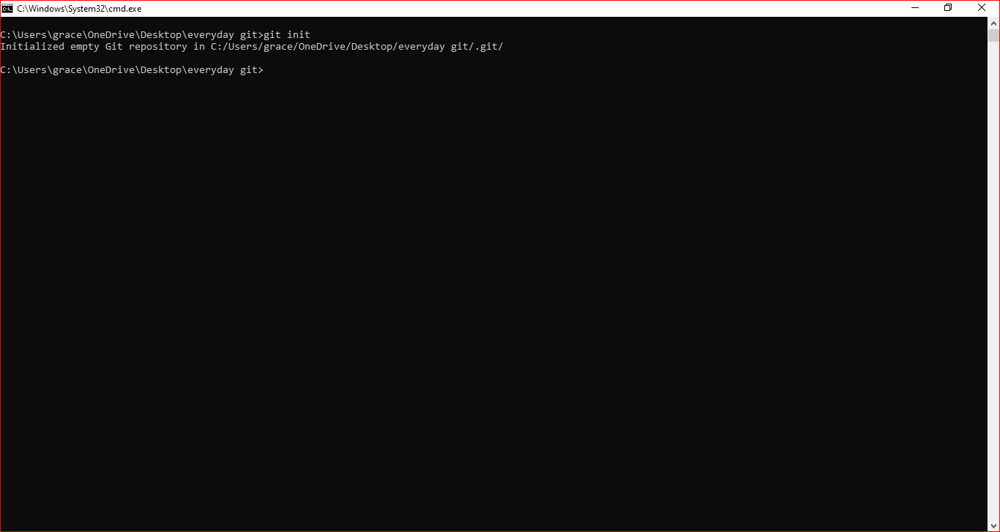
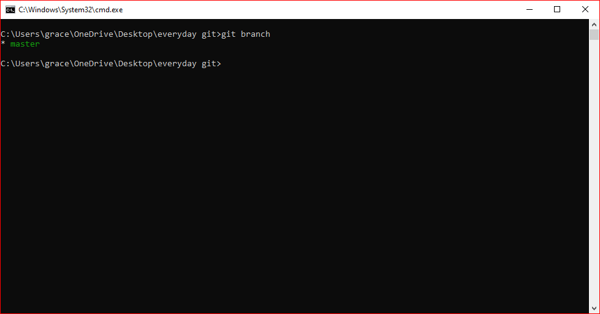
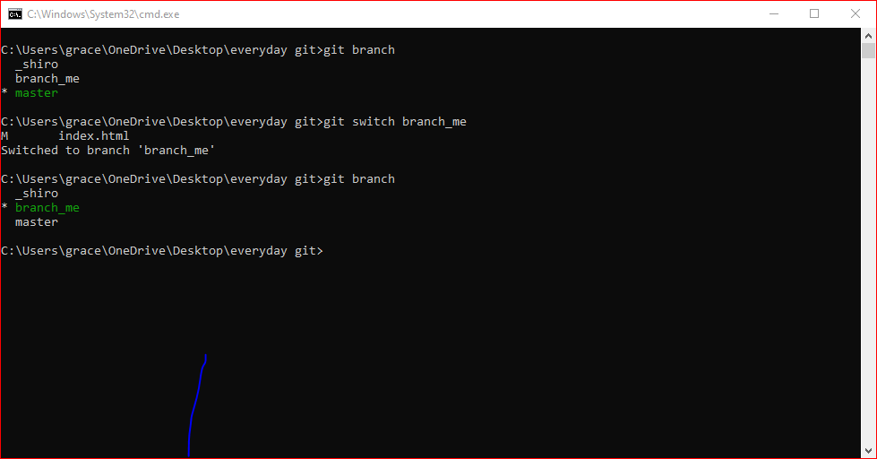

Git is a version control syatem.
A version control system is a software that is used to track and manage changes to files over time.
It allows users to revist earlier versions of their files and undo changes
Other version control system includes; subversion,cvs,mercurial.
All version control systems have a common goal but they varry significance how they achieve they goals.
Git is the most popular and most used version control system.
Someone may think git and github are the same but they are totally different.
| git | github |
|---|---|
| one does not need to create an account to use git. | you have to create an account to use github. |
| Git is a control version that runs locally in your mchine. | Github is a sevice that usually host git repositories in the cloud and makes collabolation easier. |
| You can use git with using github | Github is an online platform to share or to save your complete projects. |
To use git you need to download and install git if you do not have.
You can use the link below to download git.
download git the file will be downloded ,click nextnext till git is installed sucesfully
open command prompt
run the commant;
git --version

Since git does not need an account, we need to have an username and an email address
Open command prompt
run the command;
git config --global user.name "username"
Replace the username with your preffered user name you would like to use eg;Grace

to configure email address we just need to follow the same steps as for user name,
but the only thing we cahnge is replacing username with email
open the command prompt
Run the command;
git config --global user.email "email address"
Replacethe user.email with preferable email you want to use eg; gitau0800@gmail.com

A git repository is a workplace which tracks and manages files within a folder
Anytime we want to use git with a project we need to create a new git repository.
every project should it single git repository
Once you initialize a repository it cannot be inilized again.
For you to confirm if the repo is initialized ,we usually rn the command;
git status
Opend the command prompt an run the command;
git init
after running the command you will have initiated the repository as shown below
In git,staging area is also known as index.
its am imtermediate space where you can organize changes before committing them to the repository
Whwn you make changes the files in your working directory those changes are not imtermeditly changed
instead we need to add these changes to staging area using git add name.txt command
Incase you have more files you want to add to staging area you can simply rusn the command
git .
To commit changes we simply run the command
git commit -m"massage"
with this it shows we have commited the changes.
what happens in one branch does not affect the other brnches.
Branches are alternative timeline for projects,
they allow you to create separate context where we can try new things
in creating a branch we only need to run the command
git branch branch_name to have the main branch.

in viewing a branch we only need to run the command
git branch to have the main branch.
we know the master is the main branch since its highlighted in green color
switching branches means changing brom one branchto another.
To switch we use the command;git switch branch_name
this shows we have changed from branch master to branch "branch_me"
to delete a branch we usually run the command;
git -d
brach_name
You can learn do more research on git and git hub to gain more knowledge.